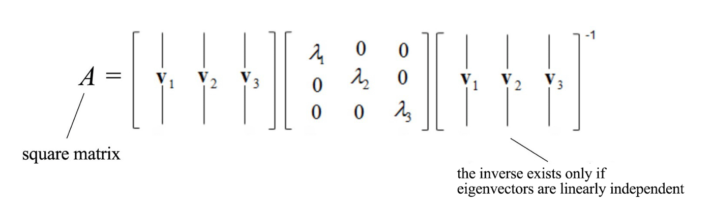
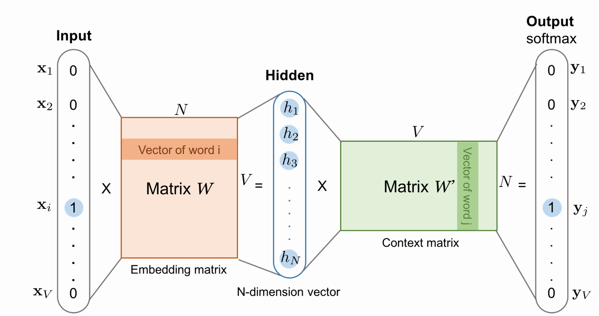
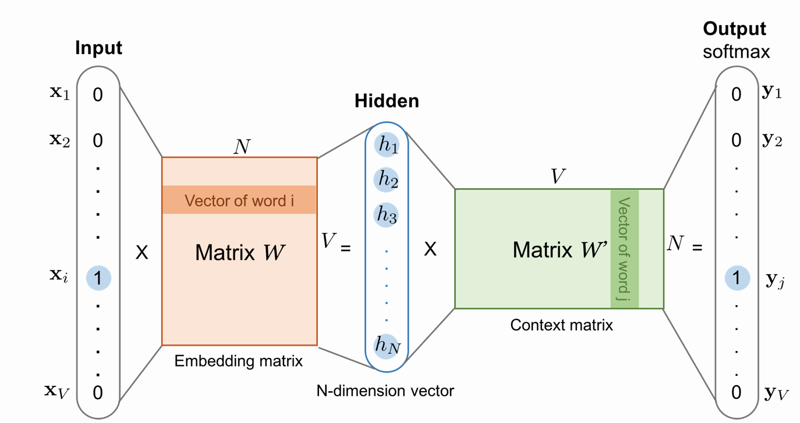
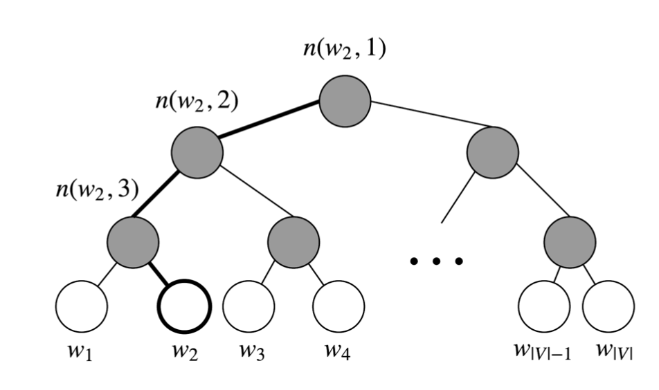

Why we need Word Vectors ?
We want to encode word tokens each into some vector that represents a point in some sort of "word" space. This is paramount for a number of reasons but the most intuitive reason is that perhaps there actually exists some N-dimensional space (such that N << 13 million) that is sufficient to encode all semantics of our language. Each dimension would encode some meaning that we transfer using speech. For instance, semantic dimensions might indicate tense (past vs. present vs. future), count (singular vs. plural), and gender (masculine vs. feminine).
One-hot vector
Represent every word as an \(\mathbb{R}^{|v|\cdot 1}\) vector with all 0s and one 1 at the index of that word in the sorted english language. \(|V|\) is the size of our vocabulary. Word vectors in this type of encoding would appear as the following:
\[ W^{abandon} = \begin{bmatrix} 1 \\ 0 \\ 0 \\ 0 \\ \vdots \\ 0 \\ \end{bmatrix} \]
We represent each word as a completely independent entity. This word representation does not give us directly any notion of similarity. For instance,
\[(W^{hotel})^{T}W^{motel} =(W^{hotel})^{T}W^{cat} = 0 \]
SVD Based Methods
For this class of methods to find word embeddings (otherwise known as word vectors), we first loop over a massive dataset and accumulate word co-occurrence counts in some form of a matrix X, and then perform Singular Value Decomposition on X to get a \(USV^{T}\) decomposition. We then use the rows of U as the word embeddings for all words in our dictionary. Let us discuss a few choices of X.
Word-Document Matrix
As our first attempt, we make the bold conjecture that words thatare related will often appear in the same documents. We use this fact to build a word-document matrix, \(X\) in the following manner: Loop over billions of documents and for each time word \(i\) appears in document \(j\), we add one to entry \(X_{ij}\). This is obviously a very large matrix \(\mathbb{R}^{|v|\cdot M}\) and it scales with the number of documents (M). So perhaps we can try something better.
Window based Co-occurrence Matrix
A co-occurrence matrix counts how often things co-occur in some environment. Given some word \(w_i\) occurring in the document, we consider the context window surrounding \(w_i\). Supposing our fixed window size is \(n\), then this is the \(n\) preceding and \(n\) subsequent words in that document, i.e. words \(w_{i-n} \dots w_{i-1}\) and \(w_{i+1} \dots w_{i+n}\). We build a co-occurrence matrix \(M\), which is a symmetric word-by-word matrix in which \(M_{ij}\) is the number of times \(w_j\) appears inside \(w_i\)'s window.
Example: Co-Occurrence with Fixed Window of n=1:
- Document 1: "all that glitters is not gold"
- Document 2: "all is well that ends well"
| * | START | all | that | glitters | is | not | gold | well | ends | END |
|---|---|---|---|---|---|---|---|---|---|---|
| START | 0 | 2 | 0 | 0 | 0 | 0 | 0 | 0 | 0 | 0 |
| all | 2 | 0 | 1 | 0 | 1 | 0 | 0 | 0 | 0 | 0 |
| that | 0 | 1 | 0 | 1 | 0 | 0 | 0 | 1 | 1 | 0 |
| glitters | 0 | 0 | 1 | 0 | 1 | 0 | 0 | 0 | 0 | 0 |
| is | 0 | 1 | 0 | 1 | 0 | 1 | 0 | 1 | 0 | 0 |
| not | 0 | 0 | 0 | 0 | 1 | 0 | 1 | 0 | 0 | 0 |
| gold | 0 | 0 | 0 | 0 | 0 | 1 | 0 | 0 | 0 | 1 |
| well | 0 | 0 | 1 | 0 | 1 | 0 | 0 | 0 | 1 | 1 |
| ends | 0 | 0 | 1 | 0 | 0 | 0 | 0 | 1 | 0 | 0 |
| END | 0 | 0 | 0 | 0 | 0 | 0 | 1 | 1 | 0 | 0 |
Note: In NLP, we often add START and END tokens to represent the beginning and end of sentences, paragraphs or documents. In thise case we imagine START and END tokens encapsulating each document, e.g., "START All that glitters is not gold END", and include these tokens in our co-occurrence counts.
The rows (or columns) of this matrix provide one type of word vectors (those based on word-word co-occurrence), but the vectors will be large in general (linear in the number of distinct words in a corpus). Thus, our next step is to run dimensionality reduction. In particular, we will run SVD (Singular Value Decomposition), which is a kind of generalized PCA (Principal Components Analysis) to select the top \(k\) principal components. Here's a visualization of dimensionality reduction with SVD. In this picture our co-occurrence matrix is \(A\) with \(n\) rows corresponding to \(n\) words. We obtain a full matrix decomposition, with the singular values ordered in the diagonal \(S\) matrix, and our new, shorter length-\(k\) word vectors in \(U_k\).
SVD
Eigenvalues quantify the importance of information along the line of eigenvectors. Equipped with this information, we know what part of the information can be ignored and how to compress information (SVD, Dimension reduction & PCA). It also helps us to extract features in developing machine learning models. Sometimes, it makes the model easier to train because of the reduction of tangled information. It also serves the purpose to visualize tangled raw data.
for Eigenvalues \(\lambda\) and Eigenvector \(V\), we have: \[AV = \lambda V \]
the dimension of A is \(\mathbb{R}^{n\cdot n}\) and \(V\) is a \(\mathbb{R}^{n\cdot 1}\) vector.
Diagonalizable
Let’s assume a matrix A has two eigenvalues and eigenvectors.
\[Av_1 = \lambda_1 v_1\] \[Av_2 = \lambda_2 v_2\]
We can concatenate them together and rewrite the equations in the matrix form.
\[ A \begin{bmatrix} v1 & v2 \end{bmatrix} = \begin{bmatrix} \lambda_1 v_1 & \lambda_2 v_2 \end{bmatrix} = \begin{bmatrix} v1 & v2 \end{bmatrix} \begin{bmatrix} \lambda_1 & 0 \\ 0 & \lambda_2 \end{bmatrix} \]
We can generalize it into any number of eigenvectors as \[AV = V\land\]
A square matrix A is diagonalizable if we can convert it into a diagonal matrix, like
\[V^{-1} A V = \land\]
An n × n square matrix is diagonalizable if it has n linearly independent eigenvectors. If a matrix is symmetric, it is diagonalizable. If a matrix does not have repeated eigenvalue, it always generates enough linearly independent eigenvectors to diagonalize a vector. If it has repeated eigenvalues, there is no guarantee we have enough eigenvectors. Some will not be diagonalizable.
If \(A\) is a square matrix with \(N\) linearly independent eigenvectors (\(v_1\), \(v_2\), \(\cdots\), \(v_n\)) and corresponding eigenvalues (\(\lambda_1\), \(\lambda_2\), \(\cdots\), \(\lambda_n\)), we can rearrange
\[V^{-1} A V = \land\]
into
\[A = V \land V^{-1}\]
For example,

Singular vectors & singular values
However, the above method is possible only if \(A\) is a square matrix and \(A\) has n linearly independent eigenvectors. Now, it is time to develop a solution for all matrices using SVD.
The matrix \(AA^{T}\) and \(A^{T}A\) are very special in linear algebra. Consider any m × n matrix A, we can multiply it with \(A^{T}\) to form \(AA^{T}\) and \(A^{T}A\) separately. These matrices are
- symmetrical,
- square,
- at least positive semidefinite (eigenvalues are zero or positive),
- both matrices have the same positive eigenvalues, and
- both have the same rank r as A.
We name the eigenvectors for \(AA^{T}\) as \(u_i\) and \(A^{T}A\) as \(v_i\) here and call these sets of eigenvectors \(u\) and \(v\) the singular vectors of A. Both matrices have the same positive eigenvalues. The square roots of these eigenvalues are called singular values. We concatenate vectors \(u_i\) into \(U\) and \(v_i\) into \(V\) to form orthogonal matrices.
SVD states that any matrix A can be factorized as:
\[A_{m\cdot n} = U_{m\cdot m} S_{m\cdot n} V_{n\cdot n}^{T}\]
S is a diagonal matrix with r elements equal to the root of the positive eigenvalues of \(AA^{T}\) or \(A^{T}A\) (both matrics have the same positive eigenvalues anyway).

Applying SVD to the cooccurrence matrix

This reduced-dimensionality co-occurrence representation preserves semantic relationships between words, e.g. doctor and hospital will be closer than doctor and dog.
Although these methods give us word vectors that are more than sufficient to encode semantic and syntactic (part of speech) information but are associated with many other problems:
- The dimensions of the matrix change very often (new words are added very frequently and corpus changes in size).
- The matrix is extremely sparse since most words do not co-occur.
- The matrix is very high dimensional in general (≈ 10e6 × 10e6)
- Quadratic cost to train (i.e. to perform SVD)
- Requires the incorporation of some hacks on X to account for the drastic imbalance in word frequency
1 | def compute_co_occurrence_matrix(corpus, window_size=4): |
Iteration Based Methods - Word2vec
Instead of computing and storing global information about some huge dataset (which might be billions of sentences), we can try to create a model that will be able to learn one iteration at a time and eventually be able to encode the probability of a word given its context. The idea is to design a model whose parameters are the word vec- tors. Then, train the model on a certain objective. At every iteration we run our model, evaluate the errors, and follow an update rule that has some notion of penalizing the model parameters that caused the error. Thus, we learn our word vectors.
Word2vec is a software package that actually includes : - 2 algorithms: continuous bag-of-words (CBOW) and skip-gram. CBOW aims to predict a center word from the surrounding context in terms of word vectors. Skip-gram does the opposite, and predicts the distribution (probability) of context words from a center word. - 2 training methods: negative sampling and hierarchical softmax. Negative sampling defines an objective by sampling negative exam- ples, while hierarchical softmax defines an objective using an efficient tree structure to compute probabilities for all the vocabulary.
Language Models
First, we need to create such a model that will assign a probability to a sequence of tokens. Let us start with an example:
"The cat jumped over the puddle."
A good language model will give this sentence a high probability because this is a completely valid sentence, syntactically and semantically. Mathematically, we can call this probability on any given sequence of n words:
\[P(w_1,w_2,\cdots,w_n)\]
We can take the unary language model approach and break apart this probability by assuming the word occurrences are completely independent: \[P(w_1,w_2,\cdots,w_n) = \prod_{i=1}^{n} P(w_i)\]
However, we know this is a bit ludicrous because we know the next word is highly contingent upon the previous sequence of words. And the silly sentence example might actually score highly. So perhaps we let the probability of the sequence depend on the pairwise probability of a word in the sequence and the word next to it. We call this the bigram model and represent it as:
\[P(w_1,w_2,\cdots,w_n) = \prod_{i=1}^{n} P(w_i|w_{i-1})\]
Again this is certainly a bit naive since we are only concerning ourselves with pairs of neighboring words rather than evaluating a whole sentence, but as we will see, this representation gets us pretty far along.
Skip-gram
One approach is to create a model such that given the center word "jumped", the model will be able to predict or generate the surrounding words "The", "cat", "over", "the", "puddle". Here we call the word "jumped" the context. We call this type of model a Skip-Gram model.  

We breakdown the way this model works in these 6 steps: 1. We generate our one hot input vector \(x \in \mathbb{R}^{|v|}\) of the center word. 2. We get our embedded word vector for the center word \[v_c = Vx \qquad \in \mathbb{R}^{|v|}\] 3. Generate a score vector \[z = Uv_c \qquad \in \mathbb{R}^{|v|} \] 4. Turn the score vector into probabilities,\(\hat{y} = softmax(z)\) \[\hat y_{c-m}, \cdots, \hat y_{c-1}, \cdots, \hat y_{c+m} \] 5. We desire our probability vector generated to match the true prob- abilities which is the one hot vectors of the actual output. \[y_{c-m}, \cdots, y_{c-1}, \cdots, y_{c+m} \]
Objective function

** How to calculate \(P(o|c)\)? We will use two vectors per word w**: - \(V_w\) when w is a center word - \(U_w\) when w is a context word
Then for a center word c and a context word o:
\[P(o|c) = \frac{exp^{u_o^{T}v_c}}{\sum_{w\in v}exp^{u_w^{T}v_c}}\]
1 | class SkipGram(nn.Module): |
Continuous Bag of Words Model (CBOW)
Another approach is to treat {"The", "cat", ’over", "the’, "puddle"} as a context and from these words, be able to predict or generate the center word "jumped". This type of model we call a Continuous Bag of Words (CBOW) Model.

We breakdown the way this model works in these steps: 1. We generate our one hot word vectors for the input context of size m: \[x^{(c−m)},\cdots,x^{(c−1)},x^{(c+1)},\cdots,x^{(c+m)}\in\mathbb{R}^{|v|}\] 2. We get our embedded word vectors for the context: \[V_{c-m} = Vx^{(c−m)},V_{c-m+1} = Vx^{(c−m+1)},\cdots,V_{c+m} = Vx^{(c+m)}\] 3. Average these vectors to get \[\hat{v} = \frac{v_{c-m} + v_{c-m+1} + \cdots + v_{c+m}}{2m}\] 4. Generate a score vector \[z = U\hat{v} \qquad \in \mathbb{R}^{|v|} \] As dot product of similar vectors is higher, it will push similar words close to each other in order to achieve a high score. 5. Turnthescoresintoprobabilities \[\hat{y} = softmax(z) \qquad \in \mathbb{R}^{|v|}\] 6. We desire our probabilities generated, \(\hat{y} \in \mathbb{R}^{|v|}\), to match the true probabilities, \(y \in \mathbb{R}^{|v|}\) which also happens to be the one hot vector of the actual word.
1 | class CBOW(nn.Module): |
Negative Sampling
Lets take a second to look at the objective function. Note that the summation over |V| is computationally huge! Any update we do or evaluation of the objective function would take O(|V|) time which if we recall is in the millions. A simple idea is we could instead just approximate it.
For every training step, instead of looping over the entire vocabulary, we can just sample several negative examples! We "sample" from a noise distribution \(P_n(w)\) whose probabilities match the ordering of the frequency of the vocabulary. Unlike the probabilistic model of Word2Vec where for each input word probability is computed from all the target words in the vocabulary, here for each input word has only few target words (few true and rest randomly selected false targets). The key difference compared to the probabilistic model is the use of sigmoid activation as final discriminator replacing softmax function in the probabilistic model.
Given this example(We get positive example by using the same skip-grams technique, a fixed window that goes around):
“I want a glass of orange juice to go along with my cereal”
The sampling will look like this:
| Context | Word | target |
|---|---|---|
| orange | juice | 1 |
| orange | king | 0 |
| orange | book | 0 |
| orange | the | 0 |
| orange | of | 0 |
So the steps to generate the samples are: 1. Pick a positive context 2. Pick a k negative contexts from the dictionary. We will have a k negative examples to 1 positive ones in the data we are collecting.

1 | from keras.layers import Merge |
hierarchical softmax
hierarchical softmax is a much more efficient alternative to the normal softmax. In practice, hierarchical softmax tends to be better for infrequent words, while negative sampling works better for frequent words and lower dimensional vectors.
Hierarchical softmax uses a binary tree to represent all words in the vocabulary. Each leaf of the tree is a word, and there is a unique path from root to leaf. In this model, there is no output representation for words. Instead, each node of the graph (except the root and the leaves) is associated to a vector that the model is going to learn.
In this model, the probability of a word w given a vector \(w_i\), p(w|w_i),is equal to the probability of a random walk starting in the root and ending in the leaf node corresponding to w. The main advantage in computing the probability this way is that the cost is only O(log(|V|)), corresponding to the length of the path. 
Taking \(w_2\) in above figure, we must take two left edges and then a right edge to reach w2 from the root, so
\[p(w_2) = p(n(w_2,1),left) \cdot p(n(w_2,2),left) \cdot p(n(w_2,3),right) \\ = \sigma({\theta_{n(w_2,1)}}^T \cdot h) \cdot \sigma({\theta_{n(w_2,2)}}^T \cdot h) \cdot \sigma({-\theta_{n(w_2,3)}}^T \cdot h)\]
Therefore, \[p(w)=\prod_{j=1}^{L(w)-1}\sigma( sign(w,j)\cdot {\theta_{n(w,j)}}^Th )\]
\[sign(w,j)= \begin{cases} 1, & \text{if n(w,j+1) is the left child of n(w,j)} \\ -1,& \text{if n(w,j+1) is the right child of n(w,j)} \end{cases}\]
- \(\theta_{n(w,j)}\) is the vector representation of \(n(w,j)\)
- \(h\) is the output of hidden layer
Global Vectors for Word Representation (GloVe)
So far, we have looked at two main classes of methods to find word embeddings. - The first set are count-based and rely on matrix factor- ization (e.g. LSA, HAL). While these methods effectively leverage global statistical information, they are primarily used to capture word similarities and do poorly on tasks such as word analogy, indi- cating a sub-optimal vector space structure. - The other set of methods are shallow window-based (e.g. the skip-gram and the CBOW mod- els), which learn word embeddings by making predictions in local context windows. These models demonstrate the capacity to capture complex linguistic patterns beyond word similarity, but fail to make use of the global co-occurrence statistics.
In comparison, GloVe consists of a weighted least squares model that trains on global word-word co-occurrence counts and thus makes efficient use of statistics. The model produces a word vector space with meaningful sub-structure. It shows state-of-the-art per- formance on the word analogy task, and outperforms other current methods on several word similarity tasks.
- Construct co-occurrence Matrix
- Construct relationships between word vectors and co-occurrence Matrix
- Let X denote the word-word co-occurrence matrix, where \(X_{ij}\) indicates the number of times word j occur in the context of word i
- \(w_{i}\),\(\tilde{w_{j}}\) is the word vector
- \(b_i,b_j\) is the bias term \[w_{i}^{T}\tilde{w_{j}} + b_i + \tilde{b_j} = \log(X_{ij}) \tag{1}\]
- Construct loss function: Mean Square Loss \[J = \sum_{i,j=1}^{V} f(X_{ij})(w_{i}^{T}\tilde{w_{j}} + b_i + \tilde{b_j} – \log(X_{ij}) )^2\] \[f(x)=\begin{equation} \begin{cases} (x/x_{max})^{\alpha} & \text{if} \ x < x_{max} \\ 1 & \text{otherwise} \end{cases} \end{equation}\]
1 | def weight_func(x, x_max, alpha): |
In conclusion, the GloVe model efficiently leverages global statistical information by training only on the nonzero elements in a word- word co-occurrence matrix, and produces a vector space with mean- ingful sub-structure. It consistently outperforms word2vec on the word analogy task, given the same corpus, vocabulary, window size, and training time. It achieves better results faster, and also obtains the best results irrespective of speed.
Reference
- Course note and slides of cs224n
- Machine Learning — Singular Value Decomposition (SVD) & Principal Component Analysis (PCA)
- https://lilianweng.github.io/lil-log/2017/10/15/learning-word-embedding.html
- https://zhuanlan.zhihu.com/p/42651829
- https://nlpython.com/implementing-glove-model-with-pytorch/